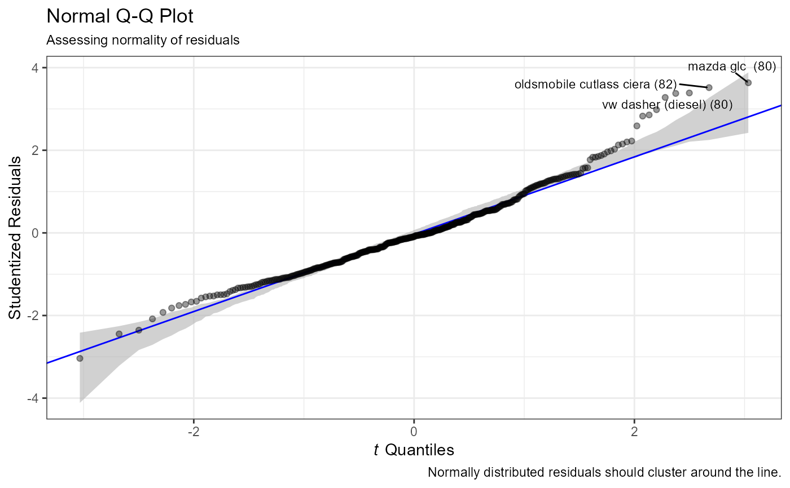
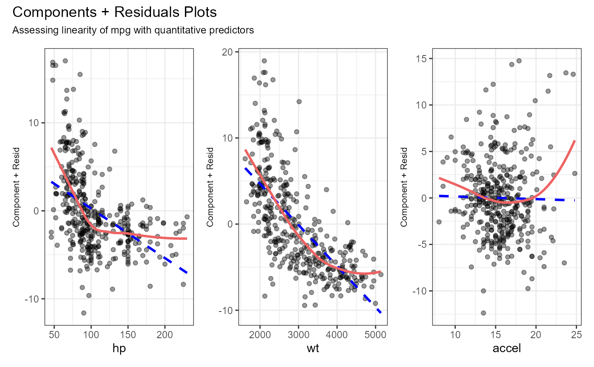
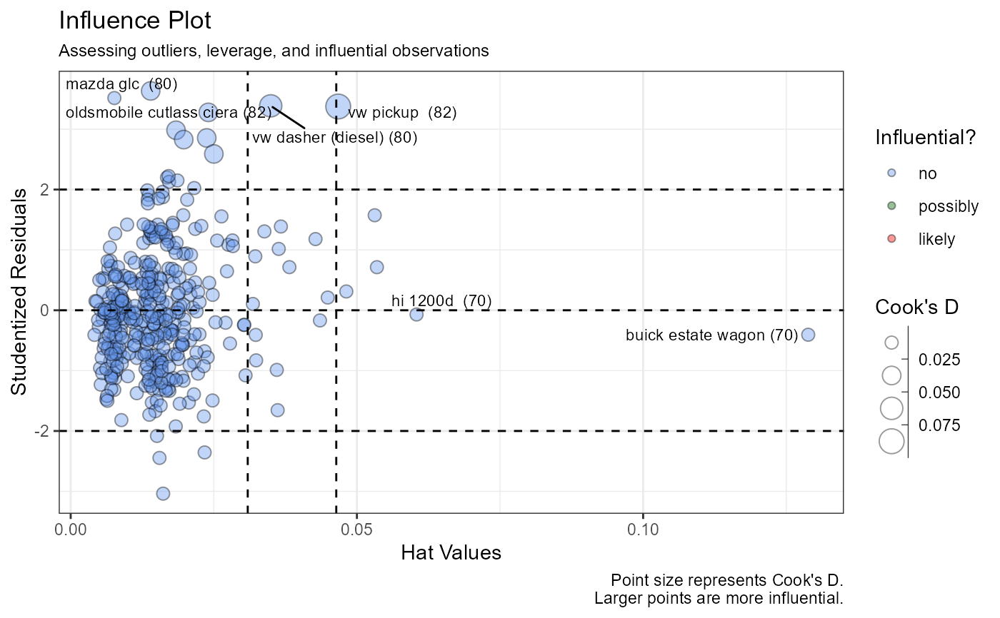

diagnostics: Run and print regression diagnostics
diagnostics.Rddiagnostics:
Run and print regression diagnostics
diagnostics(x, ...)
Arguments
| x | an object of type |
|---|---|
| ... | further arguments passed to or from other methods. |
Value
The results of the methods diagnostics.mreg or diagnostics.lreg
Examples
#> DIAGNOSTICS FOR MULTIPLE REGRESSION #> #> Normality #> Robust Jarque Bera Test for Normality #> Chi-square(2) = 73.4348, p < < 2.2e-16 #> #> Homoscedasticity #> Score Test of Non-Constant Error Variance #> Null hypothesis: constant variance #> Chi-square(1) = 40.5685 p < 1.898e-10 #> The test suggest non-constant variance. #> A sqrt(y) transformation may help to stabilize the variance. #> #> Multicollinearity #> GVIF Df GVIF^(1/(2*Df)) #> hp 8.369036 1 2.892929 #> wt 6.299228 1 2.509826 #> accel 2.535632 1 1.592367 #> origin 1.629384 2 1.129811 #> #> Outliers #> No Studentized residuals with Bonferroni p < 0.05 #> Largest |rstudent|: #> rstudent unadjusted p-value Bonferroni p #> 321 3.646272 0.00030264 0.11864